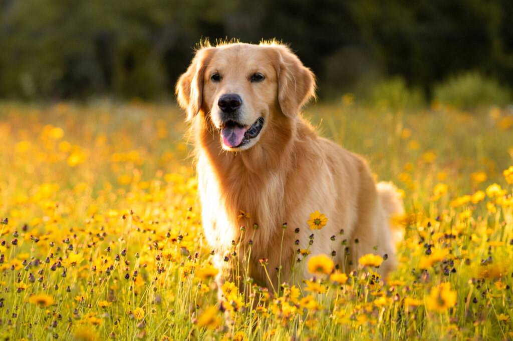

Esta página é destinada a cachorros os melhores amigos do homem, existem diversas raças de cachorros mas o que consideramos por varios motivos o melhor de todos é:

Além de ser um cachorro muito amigavel e indicado para crianças, um fato muito interessante é que também pode ser cão guia.
Com base nesses motivos que demos concluimos que o Golden Retriever é a melhor raça de cachorro.
